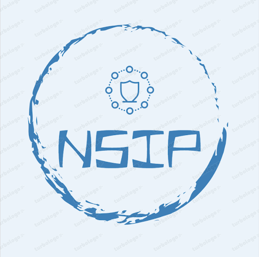

Network Security Information Page
Bienvenido a soporte técnico
Bienvenido a nuestra página informativa. Aquí encontrará información detallada sobre nuestros productos y servicios.
Consejos de Soporte Técnico
Aquí te ofrecemos algunos consejos para prevenir daños al computador y evitar la entrada de malware:
- Actualiza regularmente tu sistema operativo y software.
- Instala un programa antivirus confiable y mantenlo actualizado.
- No descargues archivos o programas de fuentes no confiables.
- No hagas clic en enlaces o correos electrónicos sospechosos.
- Haz copias de seguridad de tus datos importantes regularmente.
- No compartas contraseñas con nadie y utiliza contraseñas seguras.
- Configura un cortafuegos para proteger tu red y dispositivos.